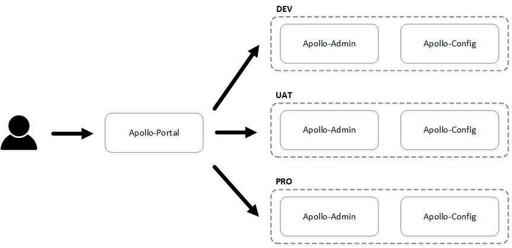
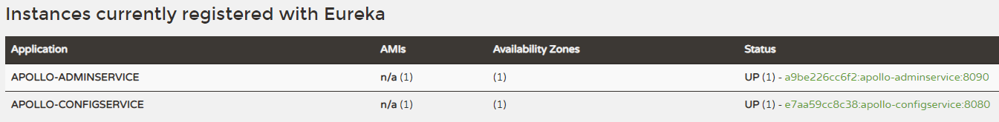
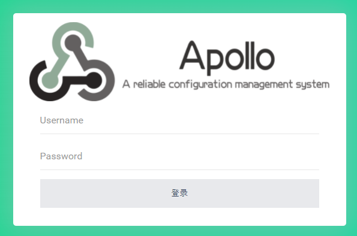

2021/10/31 Apollo配罝中心
[TOC]
一、簡介
Apollo是中國携程框架研發部所開發的開源項目，實現分布式的配管理中心，本文章是基於官方文檔整理的布署筆記，細節可以查看官網
二、架構圖

說明：
Apolloe 是由Portal、Admin、Config 三個模塊組成，Portal主要是管理後台，再通過不同的配罝，訪問不同環境的配罝中心，若實際應用上有需要DEV、UAT、PRO三個環境，則會需要三套Admin+Config
三、布署
1. 環境
| URL | 說明 |
|---|---|
| http://192.168.1.17:8070 | Apollo-Portal |
| http://192.168.1.17:18080 | Apollo-Admin-Dev |
| http://192.168.1.17:18090 | Apollo-Config-Dev |
| http://192.168.1.17:28080 | Apollo-Admin-Uat |
| http://192.168.1.17:28090 | Apollo-Config-Uat |
| http://192.168.1.17:38080 | Apollo-Admin-Pro |
| http://192.168.1.17:38090 | Apollo-Config-Pro |
注：192.168.1.17 為測試機IP
2. docker-compose.yml
version: '3'
services:
# Portal
apollo-portal:
container_name: apollo-portal
image: 'apolloconfig/apollo-portal:1.9.1'
user: root
restart: always
# 環境變量中設罝不同環境的URL地址
environment:
- 'SPRING_DATASOURCE_URL=jdbc:mysql://apollo-db:3306/ApolloPortalDB?characterEncoding=utf8'
- 'SPRING_DATASOURCE_USERNAME=root'
- 'SPRING_DATASOURCE_PASSWORD=P@ssw0rd'
- 'APOLLO_PORTAL_ENVS=dev,uat,pro'
- 'DEV_META=http://apollo-config-dev:8080'
- 'UAT_META=http://apollo-config-uat:8080'
- 'PRO_META=http://apollo-config-pro:8080'
ports:
- '8070:8070'
volumes:
- '/opt/apollo/apollo-portal:/opt/logs'
depends_on:
- 'apollo-db'
# 數據庫
apollo-db:
container_name: apollo-db
image: 'percona:8.0'
user: root
restart: always
command: 'mysqld --user=root'
environment:
- 'MYSQL_DATABASE=db'
- 'MYSQL_ROOT_PASSWORD=P@ssw0rd'
ports:
- '3306:3306'
volumes:
- '/opt/apollo/apollo-db:/var/lib/mysql'
# DEV 環境
apollo-admin-dev:
container_name: apollo-admin-dev
image: 'apolloconfig/apollo-adminservice:1.9.1'
user: root
restart: always
# 不同環境需要不同數據庫
environment:
- 'SPRING_DATASOURCE_URL=jdbc:mysql://apollo-db:3306/ApolloConfigDevDB?characterEncoding=utf8'
- 'SPRING_DATASOURCE_USERNAME=root'
- 'SPRING_DATASOURCE_PASSWORD=P@ssw0rd'
ports:
- '18090:8090'
volumes:
- '/opt/apollo/apollo-admin-dev:/opt/logs'
depends_on:
- 'apollo-db'
apollo-config-dev:
container_name: apollo-config-dev
image: 'apolloconfig/apollo-configservice:1.9.1'
user: root
restart: always
# 不同環境需要不同數據庫
environment:
- 'SPRING_DATASOURCE_URL=jdbc:mysql://apollo-db:3306/ApolloConfigDevDB?characterEncoding=utf8'
- 'SPRING_DATASOURCE_USERNAME=root'
- 'SPRING_DATASOURCE_PASSWORD=P@ssw0rd'
ports:
- '18080:8080'
volumes:
- '/opt/apollo/apollo-config-dev:/opt/logs'
depends_on:
- 'apollo-db'
# UAT 環境
apollo-admin-uat:
container_name: apollo-admin-uat
image: 'apolloconfig/apollo-adminservice:1.9.1'
user: root
restart: always
# 不同環境需要不同數據庫
environment:
- 'SPRING_DATASOURCE_URL=jdbc:mysql://apollo-db:3306/ApolloConfigUatDB?characterEncoding=utf8'
- 'SPRING_DATASOURCE_USERNAME=root'
- 'SPRING_DATASOURCE_PASSWORD=P@ssw0rd'
ports:
- '28090:8090'
volumes:
- '/opt/apollo/apollo-admin-uat:/opt/logs'
depends_on:
- 'apollo-db'
apollo-config-uat:
container_name: apollo-config-uat
image: 'apolloconfig/apollo-configservice:1.9.1'
user: root
restart: always
# 不同環境需要不同數據庫
environment:
- 'SPRING_DATASOURCE_URL=jdbc:mysql://apollo-db:3306/ApolloConfigUatDB?characterEncoding=utf8'
- 'SPRING_DATASOURCE_USERNAME=root'
- 'SPRING_DATASOURCE_PASSWORD=P@ssw0rd'
ports:
- '28080:8080'
volumes:
- '/opt/apollo/apollo-config-uat:/opt/logs'
depends_on:
- 'apollo-db'
# PRO 環境
apollo-admin-pro:
container_name: apollo-admin-pro
image: 'apolloconfig/apollo-adminservice:1.9.1'
user: root
restart: always
# 不同環境需要不同數據庫
environment:
- 'SPRING_DATASOURCE_URL=jdbc:mysql://apollo-db:3306/ApolloConfigProDB?characterEncoding=utf8'
- 'SPRING_DATASOURCE_USERNAME=root'
- 'SPRING_DATASOURCE_PASSWORD=P@ssw0rd'
ports:
- '38090:8090'
volumes:
- '/opt/apollo/apollo-admin-pro:/opt/logs'
depends_on:
- 'apollo-db'
apollo-config-pro:
container_name: apollo-config-pro
image: 'apolloconfig/apollo-configservice:1.9.1'
user: root
restart: always
# 不同環境需要不同數據庫
environment:
- 'SPRING_DATASOURCE_URL=jdbc:mysql://apollo-db:3306/ApolloConfigProDB?characterEncoding=utf8'
- 'SPRING_DATASOURCE_USERNAME=root'
- 'SPRING_DATASOURCE_PASSWORD=P@ssw0rd'
ports:
- '38080:8080'
volumes:
- '/opt/apollo/apollo-config-pro:/opt/logs'
depends_on:
- 'apollo-db'
3.執行 & 導入數據
啟動 docker-compose
>> docker-compose up -d
由於是使用MySQL8，密碼認證需要更改
注：請自行加固密碼安全
>> docker exec -it apollo-db mysql -uroot -pP@ssw0rd -e "ALTER USER 'root'@'%' IDENTIFIED WITH mysql_native_password BY 'P@ssw0rd';"
創建數據庫
>> mysql -h 192.168.1.17 -u root -pP@ssw0rd -e 'CREATE DATABASE ApolloPortalDB DEFAULT CHARACTER SET utf8 COLLATE utf8_general_ci;'
>> mysql -h 192.168.1.17 -u root -pP@ssw0rd -e 'CREATE DATABASE ApolloConfigDevDB DEFAULT CHARACTER SET utf8 COLLATE utf8_general_ci;'
>> mysql -h 192.168.1.17 -u root -pP@ssw0rd -e 'CREATE DATABASE ApolloConfigUatDB DEFAULT CHARACTER SET utf8 COLLATE utf8_general_ci;'
>> mysql -h 192.168.1.17 -u root -pP@ssw0rd -e 'CREATE DATABASE ApolloConfigProDB DEFAULT CHARACTER SET utf8 COLLATE utf8_general_ci;'
導入數據
>> wget https://raw.githubusercontent.com/apolloconfig/apollo-build-scripts/master/sql/apolloconfigdb.sql
>> wget https://raw.githubusercontent.com/apolloconfig/apollo-build-scripts/master/sql/apolloportaldb.sql
# 需要修改 apolloconfigdb.sql，移除創建數據庫SQL
>> mysql -h 192.168.1.17 -u root -pP@ssw0rd ApolloPortalDB < apolloportaldb.sql
>> mysql -h 192.168.1.17 -u root -pP@ssw0rd ApolloConfigDevDB < apolloconfigdb.sql
>> mysql -h 192.168.1.17 -u root -pP@ssw0rd ApolloConfigUatDB < apolloconfigdb.sql
>> mysql -h 192.168.1.17 -u root -pP@ssw0rd ApolloConfigProDB < apolloconfigdb.sql
修改各環境admin讀取config服務的URL
>> mysql -h 192.168.1.17 -u root -p
>> UPDATE ApolloConfigDevDB.ServerConfig SET `value`='http://apollo-config-dev:8080/eureka/' WHERE `key`='eureka.service.url';
>> UPDATE ApolloConfigUatDB.ServerConfig SET `value`='http://apollo-config-uat:8080/eureka/' WHERE `key`='eureka.service.url';
>> UPDATE ApolloConfigProDB.ServerConfig SET `value`='http://apollo-config-pro:8080/eureka/' WHERE `key`='eureka.service.url';
四、測試
可以訪問個環境的Admin頁面，確認服務是否正常啟用，如 192.168.1.17:18080

訪問 Portal 頁面(192.168.1.17:8070)，默認帳密 apollo/admin

測試配罝文件的抓取，不同URL代表不同環境，沒異常的話，就可以給程序正常調用
>> curl 'http://192.168.1.17:18080/configs/SampleApp/default/application'
{"appId":"SampleApp","cluster":"default","namespaceName":"application","configurations":{"timeout":"100"},"releaseKey":"20211101001334-1dc5a1de1881599c"}
>> curl 'http://192.168.1.17:28080/configs/SampleApp/default/application'
{"appId":"SampleApp","cluster":"default","namespaceName":"application","configurations":{"timeout":"100"},"releaseKey":"20211101001349-1dc5adf81c2a26a2"}
>> curl 'http://192.168.1.17:38080/configs/SampleApp/default/application'
{"appId":"SampleApp","cluster":"default","namespaceName":"application","configurations":{"timeout":"100"},"releaseKey":"20211101001400-1dc5a7eb1af82f79"}